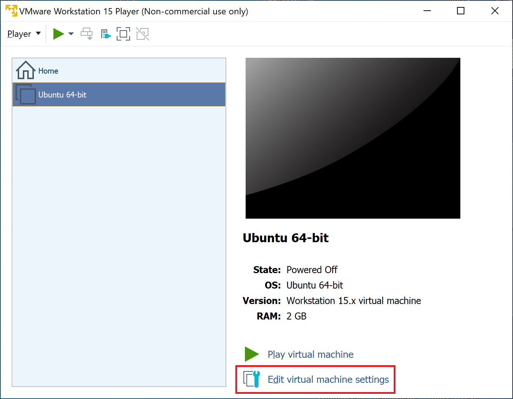
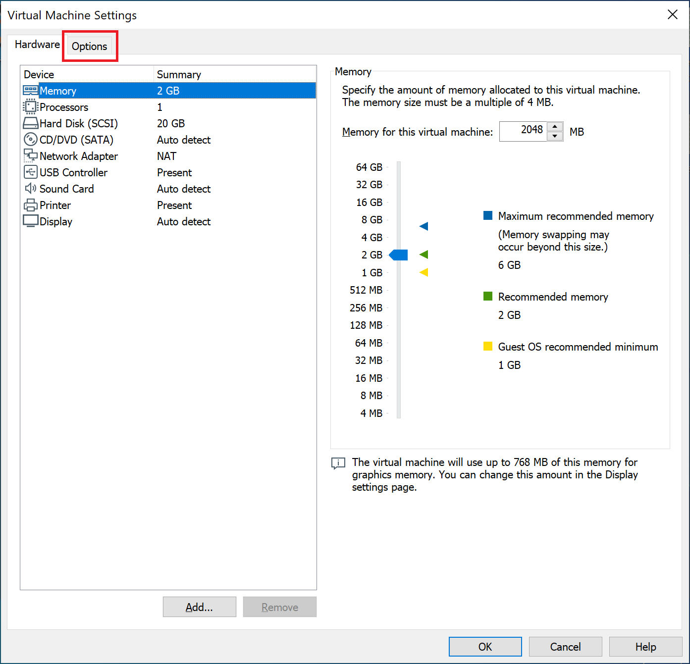
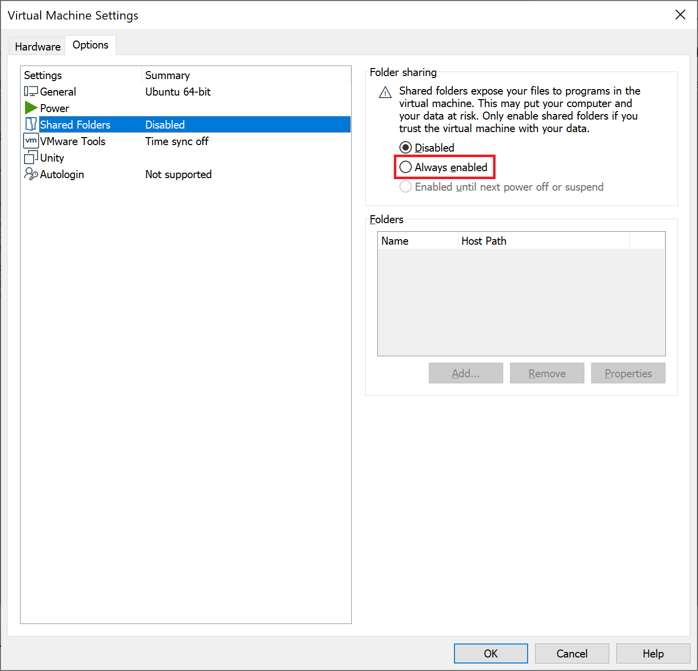
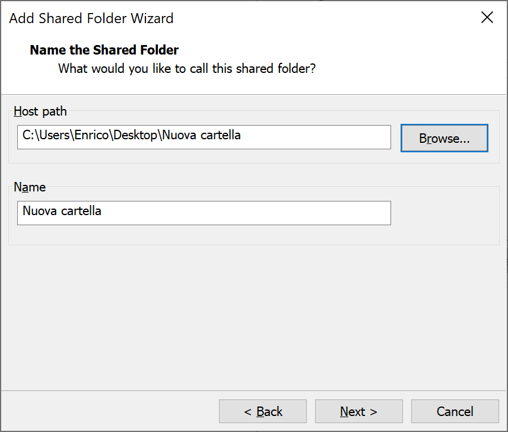
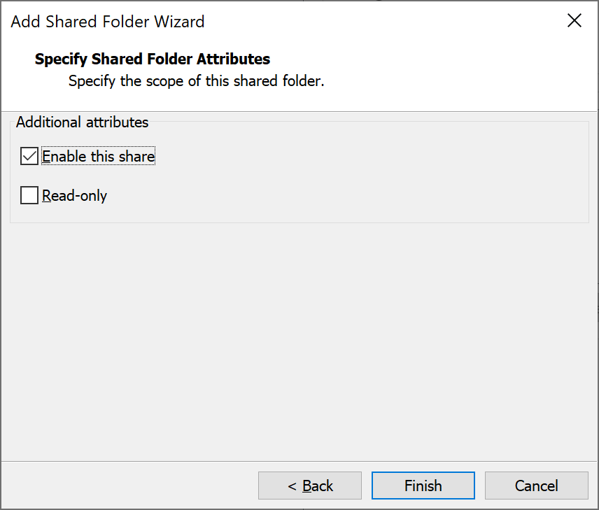
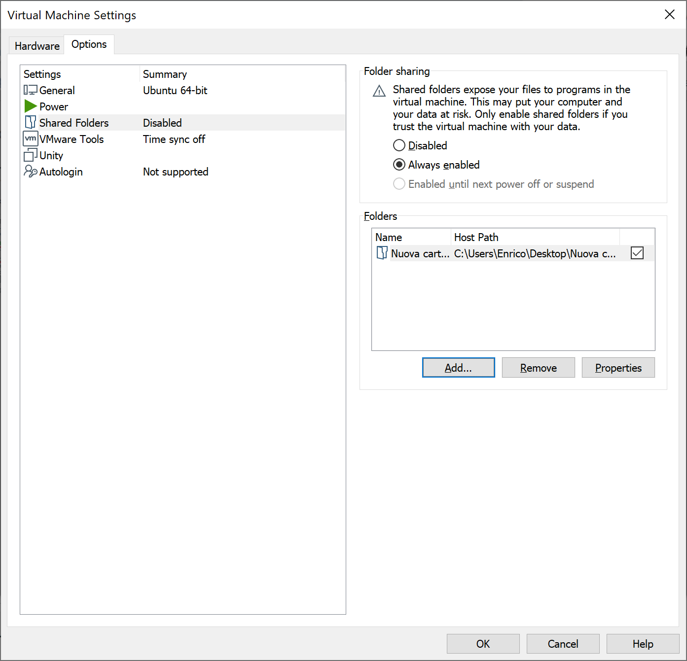

La visualizzazione di annunci pubblicitari rende possibile lo sviluppo di questo sito.
Disabilita il tuo ad blocker e ricarica la pagina per continuare.
VMware Workstation Player: trasferire dati tra Windows e una macchina virtuale con Linux
Ultima modifica: 25/11/2019
Avete creato creato una nuova macchina virtuale e avete installato Ubuntu o un altro sistema operativo basato su Linux. Ora volete trasferire file e cartelle da Windows alla macchina virtuale appena creata.
Il metodo più semplice è quello di attivare le cartelle condivise (shared folders). Ecco come fare:
-
Aprire le impostazioni della macchina virtuale.

-
Aprire il tab Options.

-
Cliccare sull'opzione Shared Folders, quindi selezionare la voce Always enabled e cliccare su Add.

-
Si apre una procedura guidata.
Come Host path scegliere il percorso della cartella condivisa tra le cartelle di Windows. Nell'immagine ho condiviso Nuova Cartella che ho creato sul Desktop.

-
Non modificare gli attributi nella schermata successiva, a meno che non si voglia limitare alla sola lettura l'accesso della macchina virtuale alla cartella condivisa. In quel caso selezionare la voce Read-only.

-
Cliccare su Finish. La procedura è terminata. Dovrebbe apparire una schermata come quella sotto. Per concludere cliccare Ok.

Non abbiamo ancora finito. L'ultimo passo consiste nell'abilitare la cartella condivisa su Ubuntu. Avviare la macchina virtuale e aprire il terminale. Quindi, digitare questo comando:
sudo vmhgfs-fuse .host:/ /mnt/hgfs/ -o allow_other -o uid=1000
In questo modo, la cartella condivisa diventa accessibile al percorso
/mnt/hgfs/. Nel mio caso il percorso è
"/mnt/hgfs/Nuova Cartella".